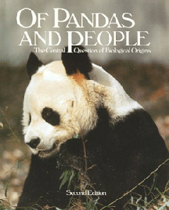

- Title Page
- Introduction
- York's Newspapers
- The School Board
- A new theory
- Darwin's theory
- A legal history of evolution
- Intelligent Design
- When science meets politics
- September story
- The statement and the lawsuit
- Covering the controversy
- Holes in evolutionary theory?
- Spotlight on Dover
- The trial: The plaintiffs' case
- The trial: The defense
Intelligent Design
In the wake of Edwards v. Aguillard, the Institute for Creation Research, then the largest US organization dedicated to creation science, encouraged its allies and advocates to change course. The Institute urged science teachers to expose students to evidence against evolution—on the assumption that such evidence would naturally point toward a creationist explanation of life on earth, even if “creationism” itself could not be taught in public school. Anti-evolutionists also encouraged instructors to emphasize that evolution was a theory rather than a hard fact. Scientists argued, however, that the use of the terms “theory” and “fact” as contrasting forms of knowledge was misleading. One expert noted:
The scientific term with the greatest difference in usage between the public and scientists is the term “theory,” which means “guess” or “hunch” to members of the public, and something far more important to scientists. In science, a theory is a logical construct of facts, laws, and tested hypotheses that explain a natural phenomenon. The proper synonym for theory— used in the scientific sense—therefore is “explanation,” rather than “guess.” Because evolution is a well-established scientific theory—in the sense of an explanation—it is no more a guess than the theory of gravitation or the theory of the atom.[1]

Of Pandas and People textbook.
Courtesy National Center for Science Education
In 1989, the Texas-based Foundation for Thought and Ethics published a textbook, Of Pandas and People, in another challenge to evolution. The book contrasted evolution with the alternative theory of intelligent design. The theory posited that certain features of life on earth—such as the eye and the immune system—were so complex that they could not have emerged through a series of successive mutations alone. Such complexity indicated the guiding hand of a designer or intelligent supernatural force. A spokesman for the pro-intelligent design Discovery Institute explained that while many intelligent-design proponents believed the designer was God, “a person could logically argue that some sort of human has been able to design features of life working through time travel… and some people say aliens are the designer.”[2]
Meanwhile, the controversy over evolution again reappeared in court. In 2002, the school board in Cobb County, Georgia mandated that disclaimer stickers be placed on high school biology textbooks. The stickers read:
This textbook contains material on evolution. Evolution is a theory, not a fact, regarding the origin of living things. This material should be approached with an open mind, studied carefully, and critically considered.[3]
Six parents and the ACLU sued. The case had yet to be decided in 2004.[4] At the same time, school boards in many other states were exploring their own new challenges to evolution.[5] The Dover school board was about to become one of them. On August 3, 2004, the board approved by a vote of 5-3, with one abstention, the biology textbook that Curriculum Head Buckingham had dismissed as “laced with Darwinism” in June. Both Buckingham and School Board Head Bonsell voted against the book; Buckingham said that he would introduce a motion, perhaps in September, to have the board approve the intelligent design textbook Of Pandas and People as a companion to the biology text.[6]
[1] Eugenie Scott, Expert Witness Statement, Selman v. Cobb County, November 17, 2006.
[2] Laurel Rosen, “Darwin Faces a New Rival,” Sacramento Bee, June 22, 2003. Quoted in Eugenie Scott, Expert Witness Statement, Selman v. Cobb County, November 17, 2006.
[3] Associated Press, “Judge nixes evolution textbook stickers,” January 13, 2005.
[4] This ruling was appealed, remanded back to the district court on a technicality, then settled in favor of the plaintiffs.
[5] Laura Parker, “School science debate has evolved,” USA Today, November 29, 2004.
[6] Joseph Maldonado, “Biology book squeaked by; Dover area school’s debate included accusations of blackmail.” York Daily Record, August 4, 2004.